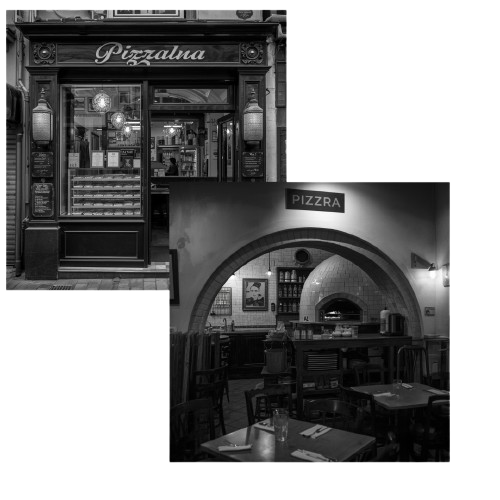

Pizza Nova : Une Tradition familiale depuis 1970
Trois Générations de Passion
L'aventure Pizza Nova a commencé il y a exactement 56 ans, dans les ruelles ensoleillées de Naples, avant que mon grand-père Vito, n'apporte ses secrets de fabrication ici pour les études de son fils à EISTI (aujourd'hui CY TECH) . À l'époque, il n'avait qu'un vieux four à bois et une recette de pâte unique, transmise de génération en génération.
Aujourd'hui, même si nous avons grandi, l'esprit reste le même. Chez nous, on ne parle pas de clients, mais de "famille". Chaque matin, nous sélectionnons nos tomates San Marzano et notre mozzarella fior di latte avec la même exigence que nos ancêtres. Notre levain, que nous entretenons jalousement, a plus de 50 ans d'âge !
Le Renouveau : L'ère de CY Tech
En 2025, un nouveau chapitre s'écrit pour Pizza Nova. Pour faire entrer cette institution centenaire dans l'ère du numérique sans perdre son âme, la famille a confié les rênes à trois jeunes talents de CY Tech : Ibrahim, Ikram et Matthieu.
Ces trois étudiants ingénieurs, clients fidèles de la pizzeria depuis leur première année, ont su convaincre les anciens par leur vision : marier les algorithmes de demain avec les saveurs d'hier. Matthieu, Véritable maitre dans l'art du code et des sites: veille à ce que chaque commande soit une partition sans fausse note. Ikram, L'excellence en une personne : La chef en cuisine et au projet et qui assure la transition gardien de l'organisation et du planning, Ibrahim, Client fidèle depuis toujours et surtout expert en structure, a solidifié les fondations techniques du site pour que Pizza Nova puisse livrer aux quatre coins de Cergy en un clic.
Aujourd'hui, ils ne se contentent pas de coder ; ils apprennent aussi l'art secret de la fermentation auprès des maîtres pizzaïolos. Pizza Nova n'est plus seulement une pizzeria familiale, c'est devenu le laboratoire où l'innovation de CY rencontre la tradition de Naples.
Le Respect du Produit
Pourquoi nos pizzas ont-elles ce goût si particulier ? Parce que nous respectons le temps. Notre pâte repose pendant 72 heures minimum pour garantir une légèreté et un croustillant incomparables. C'est ce mariage entre le temps, le feu et le cœur qui fait la renommée de Pizza Nova depuis un siècle.
"Une pizza n'est pas qu'un repas, c'est un morceau de notre histoire que nous partageons avec vous et une expérience unique."— La Famille Nova
📍 Nous trouver
4 Rue du Prieure, 95000 Cergy
📞 Contact
01 02 03 04 05